Unidos pela amizade
Conheça os Ursinhos Carinhosos!
Eles são um grupo de ursinhos coloridos e encantadores que vivem na Nuvenlândia, um reino mágico nas nuvens, e viajam pelo mundo para espalhar amor, empatia e bons sentimentos por onde passam.
Aprenda criando
Início
Ursinhos
Contato
Unidos pela amizade
Eles são um grupo de ursinhos coloridos e encantadores que vivem na Nuvenlândia, um reino mágico nas nuvens, e viajam pelo mundo para espalhar amor, empatia e bons sentimentos por onde passam.
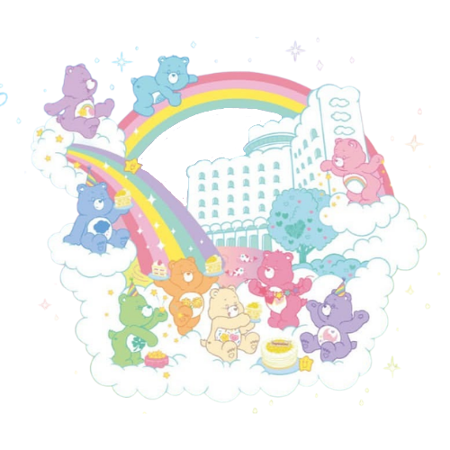
Conheça os ursinhos:

Espalha sorrisos e pensamentos positivos.

Cuida dos sonhos e traz noites tranquilas.
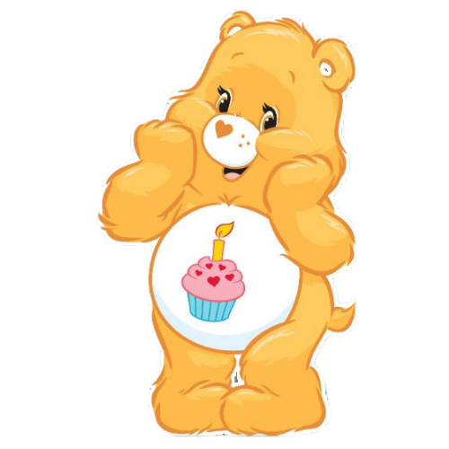
Torna cada comemoração ainda mais especial.
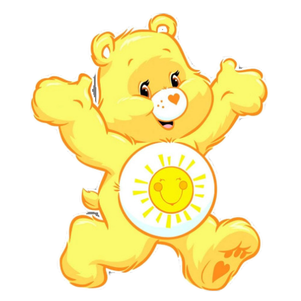
Sempre pronto para trazer diversão e energia.

Espalha sorte e boas oportunidades por onde passa.
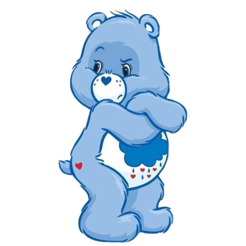
Reclama bastante, mas no fundo, tem um coração enorme.
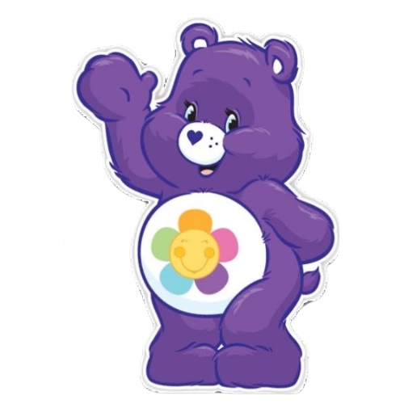
Incentiva a paz, a união e a amizade.

Guarda sentimentos e segredos com carinho.

Compartilhar sempre torna tudo mais especial.
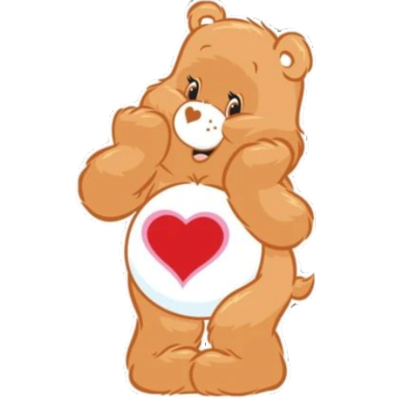
Espalha amor, carinho e compreensão.
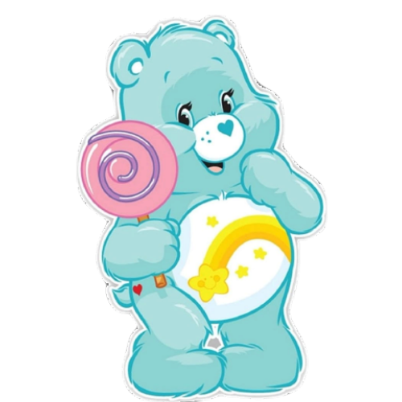
Sempre acredita que sonhos podem se tornar realidade.
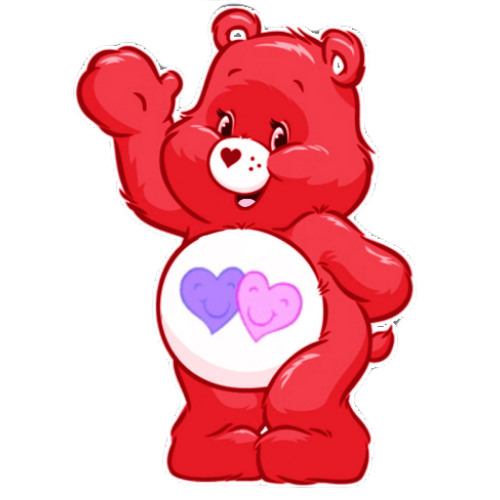
Um amigo que está ao seu lado em todos os momentos.

Compartilha muito amor, carinho e amizade.
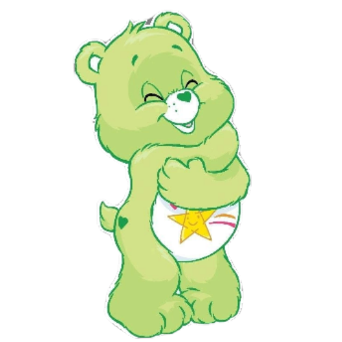
Comete alguns errinhos, mas nunca perde o encanto.
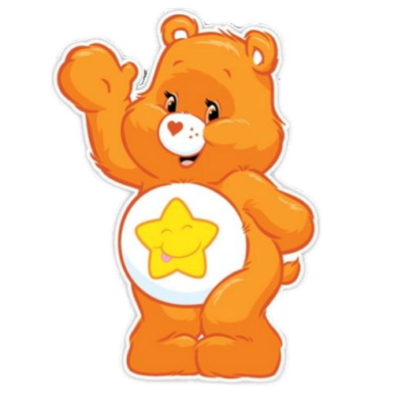
Espalha gargalhadas e diversão por onde passa.
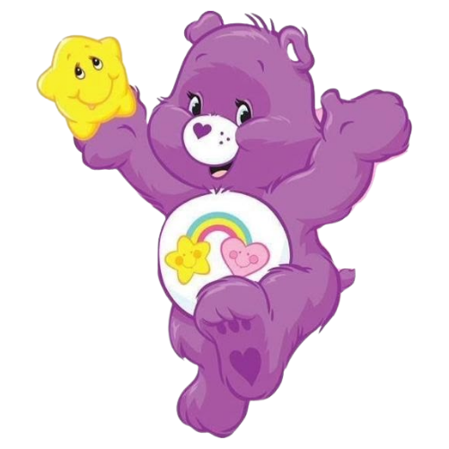
Sempre ao seu lado, torna cada momento mais especial.